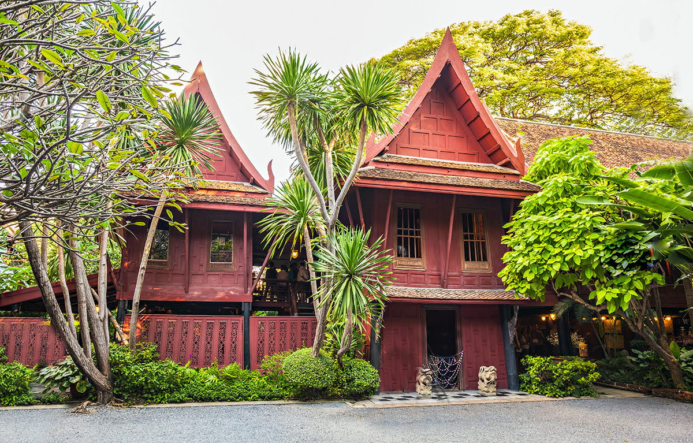

10 บ้านจิม ทอมป์สัน
James HW Thompson เป็นนักธุรกิจและสถาปนิกชาวอเมริกันที่สร้างความมั่งคั่งจากการค้าผ้าไหมไทยหลังสงครามโลกครั้งที่สอง บ้านจิม ทอมป์สัน ตั้งอยู่ริมคลองแสนแสบ เป็นบ้านไม้สักที่จิม ทอมป์สันสร้างขึ้นเพื่อใช้เป็นบ้านพักอาศัยและเป็นพิพิธภัณฑ์ส่วนตัวสำหรับงานศิลปะที่เขาใช้เวลาสะสมมานานหลายทศวรรษ อาคารแต่ละหลังในที่พักสร้างขึ้นในแบบเรือนไทยซึ่งบางหลังมีอายุมากกว่า 100 ปี ปัจจุบันเป็นพิพิธภัณฑ์ที่จัดแสดงผลงานศิลปะและโบราณวัตถุที่น่าประทับใจมากมายของจิม ทอมป์สัน